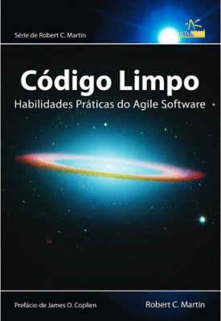
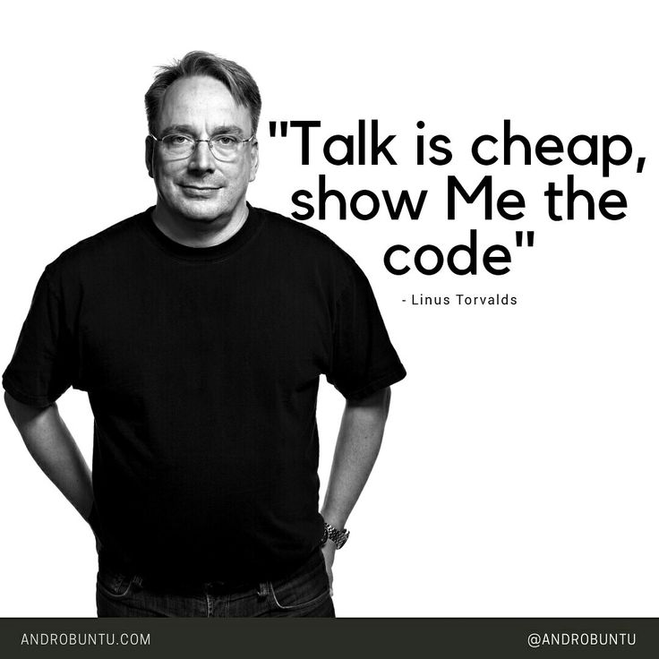

Criado por Perceu Bertoletti
Descobrindo melhores formas de construir comunidades conectando pessoas.

Leitura
Escrita
*zealdocs
Não importa tecnologia

Forma de pensar do programador.
Profissão do programador.
Expectativas
Firmesa/Honestidade
Esforço
Estudo e pratica
Deve ser respeitada e nunca ameaçada
Maneira de construir uma verdadeira relação de confiança
Experiência mais rica existente, insuperável por qualquer mídia ou tecnologia
Meio para manter uma comunidade sustentável
Se você precisa de um rótulo, defina-se como Humano
Líderes emergem, mas não devem existir donos
É como você deve ensinar, viver e aprender
tudo tem seu tempo, intensidade nem sempre é a resposta
Você se surpreenderá como isso retorna rápido
O mais simples possível, apenas o essencial para passar adiante
Me contate como Perceu Bertoletti na maioria das redes sociais
E-mail: perceubertoletti@gmail.com